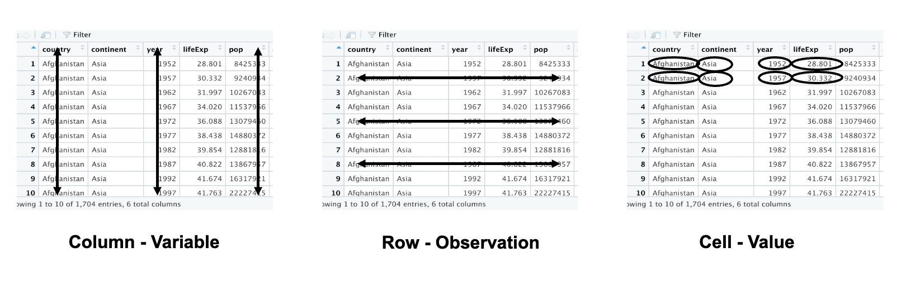

How to process messy data at hand? What does tidy data looks like?  Tidy data includes three key points:
- each row includes each observation
- each column stands for each variable
- each cell contains each value
let’s look at an example of messy data: Although the following data satisfies three kep points we mentioned before, we could change our perspectives to better understand it.
Pivot
Among all definitions of pivot, I preferred that one given by Merriam-Webster.
To adapt or improve by adjusting or modifying something (such as a product, service, or strategy)
The pivot here is an action of improve whatever you turn left or right. That’s why we’ve got data pivoting. Data pivoting enables you to rearrange the columns and rows in a data so you can view it from different perspectives to get a better sense of it.
Pivot data from long to wide
us_rent_income
## # A tibble: 104 × 5
## GEOID NAME variable estimate moe
## <chr> <chr> <chr> <dbl> <dbl>
## 1 01 Alabama income 24476 136
## 2 01 Alabama rent 747 3
## 3 02 Alaska income 32940 508
## 4 02 Alaska rent 1200 13
## 5 04 Arizona income 27517 148
## 6 04 Arizona rent 972 4
## 7 05 Arkansas income 23789 165
## 8 05 Arkansas rent 709 5
## 9 06 California income 29454 109
## 10 06 California rent 1358 3
## # … with 94 more rows
us_rent_income %>%
pivot_wider(
names_from = variable,
values_from = c(estimate, moe)
)
## # A tibble: 52 × 6
## GEOID NAME estimate_income estimate_rent moe_income moe_rent
## <chr> <chr> <dbl> <dbl> <dbl> <dbl>
## 1 01 Alabama 24476 747 136 3
## 2 02 Alaska 32940 1200 508 13
## 3 04 Arizona 27517 972 148 4
## 4 05 Arkansas 23789 709 165 5
## 5 06 California 29454 1358 109 3
## 6 08 Colorado 32401 1125 109 5
## 7 09 Connecticut 35326 1123 195 5
## 8 10 Delaware 31560 1076 247 10
## 9 11 District of Columbia 43198 1424 681 17
## 10 12 Florida 25952 1077 70 3
## # … with 42 more rows
Pivot data from wide to long
head(relig_income)
## # A tibble: 6 × 11
## religion `<$10k` `$10-20k` `$20-30k` `$30-40k` `$40-50k` `$50-75k` `$75-100k`
## <chr> <dbl> <dbl> <dbl> <dbl> <dbl> <dbl> <dbl>
## 1 Agnostic 27 34 60 81 76 137 122
## 2 Atheist 12 27 37 52 35 70 73
## 3 Buddhist 27 21 30 34 33 58 62
## 4 Catholic 418 617 732 670 638 1116 949
## 5 Don’t kn… 15 14 15 11 10 35 21
## 6 Evangeli… 575 869 1064 982 881 1486 949
## # … with 3 more variables: $100-150k <dbl>, >150k <dbl>,
## # Don't know/refused <dbl>
relig_income %>%
pivot_longer(!religion, names_to = "income", values_to = "count")
## # A tibble: 180 × 3
## religion income count
## <chr> <chr> <dbl>
## 1 Agnostic <$10k 27
## 2 Agnostic $10-20k 34
## 3 Agnostic $20-30k 60
## 4 Agnostic $30-40k 81
## 5 Agnostic $40-50k 76
## 6 Agnostic $50-75k 137
## 7 Agnostic $75-100k 122
## 8 Agnostic $100-150k 109
## 9 Agnostic >150k 84
## 10 Agnostic Don't know/refused 96
## # … with 170 more rows
billboard %>%
pivot_longer(
cols = starts_with("wk"), # or wk1:wkN
names_to = "week",
names_prefix = "wk", # A regular expression used to remove matching text from the start of each variable name
names_transform = list(week = as.integer), # convert a character variable called week to an integer
values_to = "rank",
values_drop_na = TRUE
)
## # A tibble: 5,307 × 5
## artist track date.entered week rank
## <chr> <chr> <date> <int> <dbl>
## 1 2 Pac Baby Don't Cry (Keep... 2000-02-26 1 87
## 2 2 Pac Baby Don't Cry (Keep... 2000-02-26 2 82
## 3 2 Pac Baby Don't Cry (Keep... 2000-02-26 3 72
## 4 2 Pac Baby Don't Cry (Keep... 2000-02-26 4 77
## 5 2 Pac Baby Don't Cry (Keep... 2000-02-26 5 87
## 6 2 Pac Baby Don't Cry (Keep... 2000-02-26 6 94
## 7 2 Pac Baby Don't Cry (Keep... 2000-02-26 7 99
## 8 2Ge+her The Hardest Part Of ... 2000-09-02 1 91
## 9 2Ge+her The Hardest Part Of ... 2000-09-02 2 87
## 10 2Ge+her The Hardest Part Of ... 2000-09-02 3 92
## # … with 5,297 more rows
Uncount a data frame
Uncount the data so that per x, each character gets a row and an ID.
df <- tibble(star = c("Jason", "Murphy"), boxoffice = c(1, 2))
df
## # A tibble: 2 × 2
## star boxoffice
## <chr> <dbl>
## 1 Jason 1
## 2 Murphy 2
uncount(df, boxoffice)
## # A tibble: 3 × 1
## star
## <chr>
## 1 Jason
## 2 Murphy
## 3 Murphy
uncount(df, boxoffice, .id = "ID") # The ID should go in the id column
## # A tibble: 3 × 2
## star ID
## <chr> <int>
## 1 Jason 1
## 2 Murphy 1
## 3 Murphy 2
Separate, Unite, and Fill
Separate a character column into multiple columns
df contains strings with both a name and sort of drinks. We will tidy this dataset so that each variable gets its own column.
library(tidyr)
df <- data.frame(x = c("Joy:Milk", "Monica:Coffee", "Chandler:Tea", "Rachel:Juice", NA))
df %>% separate(x, into = c("name","drink"), sep = ":", convert = TRUE)
## name drink
## 1 Joy Milk
## 2 Monica Coffee
## 3 Chandler Tea
## 4 Rachel Juice
## 5 <NA> <NA>
Unite multiple columns into one by pasting strings together
df <- data.frame(name = c("Joy", "Monica", NA), drink = c("Milk", "Coffee", NA))
df
## name drink
## 1 Joy Milk
## 2 Monica Coffee
## 3 <NA> <NA>
df %>% unite("Love", name, drink, sep =" loves ", remove = FALSE)
## Love name drink
## 1 Joy loves Milk Joy Milk
## 2 Monica loves Coffee Monica Coffee
## 3 NA loves NA <NA> <NA>
df %>% unite("Love", name, drink, sep =" loves ", na.rm = TRUE, remove = FALSE) # To remove missing values:
## Love name drink
## 1 Joy loves Milk Joy Milk
## 2 Monica loves Coffee Monica Coffee
## 3 <NA> <NA>
Separate a collapsed column into multiple rows
df <- data.frame(
name = c("Joy", "Monica/Chandler", "Rachel/Ross"),
drink = c("Milk", "Coffee/Tea", "Juice/Water")
)
df %>%
separate_rows(name, drink, sep = "/", convert = TRUE)
## # A tibble: 5 × 2
## name drink
## <chr> <chr>
## 1 Joy Milk
## 2 Monica Coffee
## 3 Chandler Tea
## 4 Rachel Juice
## 5 Ross Water
Fill in missing values with previous or next value
sales <- tibble::tribble(
~quarter, ~year, ~sales,
"Q1", 2000, 66013,
"Q2", NA, 69182,
"Q3", NA, 53175,
"Q4", NA, 21001,
"Q1", 2001, 46036,
"Q2", NA, 58842,
"Q3", NA, 44568,
"Q4", NA, 50197,
"Q1", 2002, 39113,
"Q2", NA, 41668,
"Q3", NA, 30144,
"Q4", NA, 52897,
"Q1", 2004, 32129,
"Q2", NA, 67686,
"Q3", NA, 31768,
"Q4", NA, 49094
)
# `fill()` defaults to replacing missing data from top to bottom
sales_df <- sales %>% fill(year, .direction = "down")
sales_df
## # A tibble: 16 × 3
## quarter year sales
## <chr> <dbl> <dbl>
## 1 Q1 2000 66013
## 2 Q2 2000 69182
## 3 Q3 2000 53175
## 4 Q4 2000 21001
## 5 Q1 2001 46036
## 6 Q2 2001 58842
## 7 Q3 2001 44568
## 8 Q4 2001 50197
## 9 Q1 2002 39113
## 10 Q2 2002 41668
## 11 Q3 2002 30144
## 12 Q4 2002 52897
## 13 Q1 2004 32129
## 14 Q2 2004 67686
## 15 Q3 2004 31768
## 16 Q4 2004 49094
Create a line plot with sales per quarter colored by year

Create a tibble from all combinations of inputs
expand_grid(x = 1:3, y = 1:2)
## # A tibble: 6 × 2
## x y
## <int> <int>
## 1 1 1
## 2 1 2
## 3 2 1
## 4 2 2
## 5 3 1
## 6 3 2
expand_grid(l1 = letters, l2 = LETTERS)
## # A tibble: 676 × 2
## l1 l2
## <chr> <chr>
## 1 a A
## 2 a B
## 3 a C
## 4 a D
## 5 a E
## 6 a F
## 7 a G
## 8 a H
## 9 a I
## 10 a J
## # … with 666 more rows
expand_grid(x1 = matrix(1:4, nrow = 2), x2 = matrix(5:8, nrow = 2))
## # A tibble: 4 × 2
## x1[,1] [,2] x2[,1] [,2]
## <int> <int> <int> <int>
## 1 1 3 5 7
## 2 1 3 6 8
## 3 2 4 5 7
## 4 2 4 6 8
Complete a data frame with missing combinations of data
df <- tibble(
group = c(1:2, 1, 2),
item_id = c(1:2, 2, 3),
item_name = c("a", "a", "b", "b"),
value1 = c(1, NA, 3, 4),
value2 = 4:7
)
df
## # A tibble: 4 × 5
## group item_id item_name value1 value2
## <dbl> <dbl> <chr> <dbl> <int>
## 1 1 1 a 1 4
## 2 2 2 a NA 5
## 3 1 2 b 3 6
## 4 2 3 b 4 7
# Generate all possible combinations of `group`, `item_id`, and `item_name`
# (whether or not they appear in the data)
complete(df, group, item_id, item_name)
## # A tibble: 12 × 5
## group item_id item_name value1 value2
## <dbl> <dbl> <chr> <dbl> <int>
## 1 1 1 a 1 4
## 2 1 1 b NA NA
## 3 1 2 a NA NA
## 4 1 2 b 3 6
## 5 1 3 a NA NA
## 6 1 3 b NA NA
## 7 2 1 a NA NA
## 8 2 1 b NA NA
## 9 2 2 a NA 5
## 10 2 2 b NA NA
## 11 2 3 a NA NA
## 12 2 3 b 4 7
# # Cross all possible `group` values with the unique pairs of
# `(item_id, item_name)` that already exist in the data
complete(df, group, nesting(item_id, item_name))
## # A tibble: 8 × 5
## group item_id item_name value1 value2
## <dbl> <dbl> <chr> <dbl> <int>
## 1 1 1 a 1 4
## 2 1 2 a NA NA
## 3 1 2 b 3 6
## 4 1 3 b NA NA
## 5 2 1 a NA NA
## 6 2 2 a NA 5
## 7 2 2 b NA NA
## 8 2 3 b 4 7
Create the full sequence of values in a vector
outer_dates <- c(as.Date("1980-01-01"), as.Date("1980-12-31"))
# Generate the dates for all days in 1980
head(full_seq(outer_dates, period = 1))
## [1] "1980-01-01" "1980-01-02" "1980-01-03" "1980-01-04" "1980-01-05"
## [6] "1980-01-06"
Rectangling data
Rectangle a nested list into a tidy tibble
hoist(), unnest_longer(), and unnest_wider() provide tools for rectangling, collapsing deeply nested lists into regular columns.
Named lists of fixed length = unnest_wider(), unnamed lists of varying length = unnest_longer().
df <- tibble(
character = c("Toothless", "Dory"),
metadata = list(
list(
species = "dragon",
color = "black",
films = c(
"How to Train Your Dragon",
"How to Train Your Dragon 2",
"How to Train Your Dragon: The Hidden World"
)
),
list(
species = "blue tang",
color = "blue",
films = c("Finding Nemo", "Finding Dory")
)
)
)
df
## # A tibble: 2 × 2
## character metadata
## <chr> <list>
## 1 Toothless <named list [3]>
## 2 Dory <named list [3]>
# Turn all components of metadata into columns
df %>% unnest_wider(metadata)
## # A tibble: 2 × 4
## character species color films
## <chr> <chr> <chr> <list>
## 1 Toothless dragon black <chr [3]>
## 2 Dory blue tang blue <chr [2]>